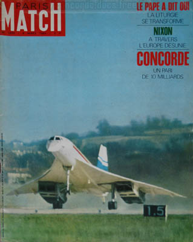
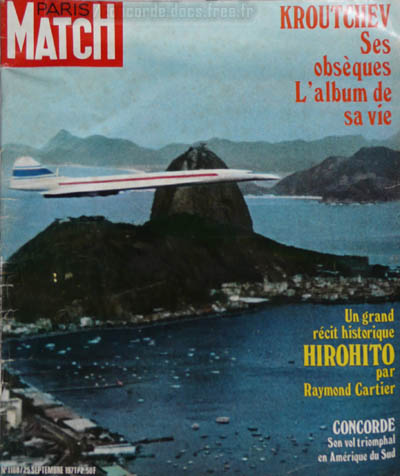
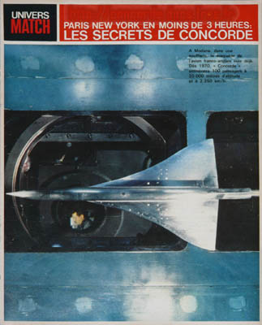
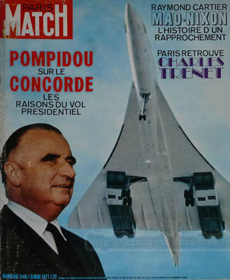
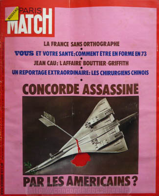

Voici des revues concernant Concorde :
Paris Match n°1035 - 08 mars 1969- 34x27 

Reportage de 8 pages sur le premier vol de Concorde et sur la personnalité d'André Turcat.
Des photos historiques.
Paris Match n°1168 - 25 sept 1971- 34x27 

Un mini article avec une seule photo noir & blanc sur une double page,
mais une photo magnifique de Concorde survolant le quartier Ipanema de Rio.
Univers Match - 1963 - 34x27 16p 

Numéro spécial sur les premiers pas du développement de Concorde : aérodynamique, température cabine, cockpit, ...
Des photos d'une grande rareté ; certaines d'une grande beauté.
Paris Match n°1148 - 08 mai 1971 - 34x27 

Un reportage de 2 pages sans photos, montrant le peu d'entrain du président Pompidou
à promouvoir cet héritage fort encombrant du général de Gaulle qu'était le Concorde.
Paris Match n°1234 - 30 déc 1972 - 34x27 

12 pages de reportage sur les pressions Américaines anti-Concorde et sur la personnalité d'Henri Ziegler.
Des photos introuvables ailleurs, dont certaines en couleur.